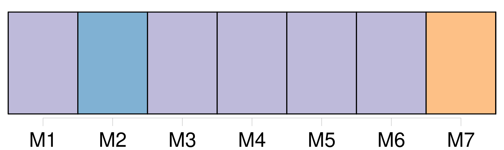
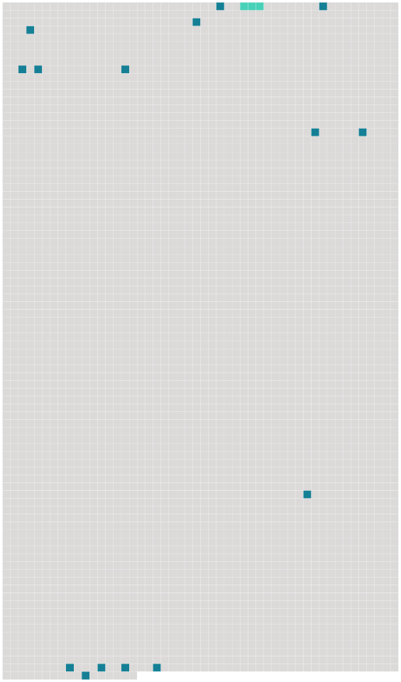

Longueur nb maillons : 16 mentions |
 |
On sait qu'au début de son séjour dans notre pays, Voltaire habita en été Les Délices près Genève, en hiver tantôt Monrion, près [Lausanne] , tantôt [cette ville -même] , au faubourg du Petit-Chêne. À [Lausanne] comme à Genève, Voltaire avait trouvé une société très aimable et lettrée, toute disposée à jouer ses tragédies. [2 phrases]
Lui -même y avait acquis le grade de major, et c'est pendant un congé passé à [Lausanne] qu'il fit la connaissance de Charlotte Pictet ; il l'épousa en 1757. « Voltaire attirait aux Délices les amis qu'il s'était faits à [Lausanne] , écrira plus tard Rosalie ; il cherchait à les lier avec des voisins qu'il avait. [7 phrases]
Il s'en allait aussi très souvent passer de longues semaines à [Lausanne] , [où] habitait sa mère, la générale de Constant, et [où] il jouait la comédie avec de belles dames. [18 phrases] Je vous félicite de la troupe que vous avez à [Lausanne] , je suppose que vous [y] passerez l'hiver, dans les foyers. [98 phrases]
» [48 phrases]
Elle ferait une fort brave petite femme, mais n'irait pas, je crois, demeurer à [Lausanne] ».
Elle [y] alla, [y] vécut et même [y] mourut, mais ce ne fut pas pour suivre Juste. On raconte à propos de ce nez qui, paraît -il, était plus qu'« un peu long » qu'un jour, étant dans son salon de [Lausanne] , elle sonnait un domestique. |
 |
Il est possible de télécharger la ressource sur la page Ortolang |
Si vous avez des questions ou vous voyez des erreurs, merci d'envoyer un mail à silvia.federzoni89@gmail.com |